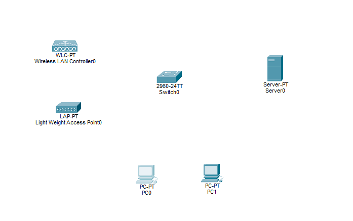
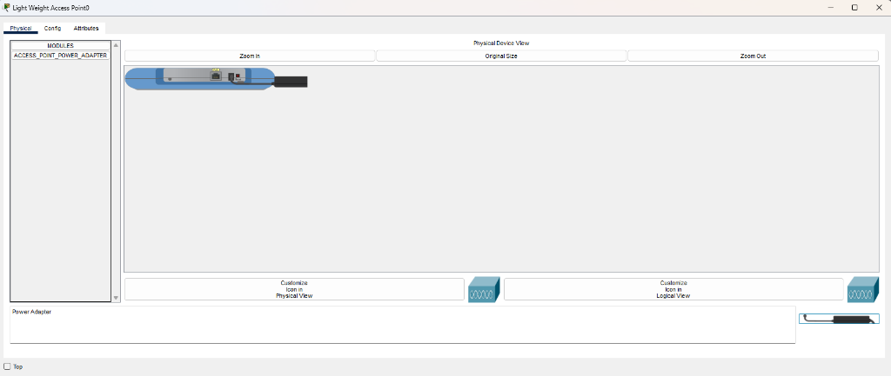
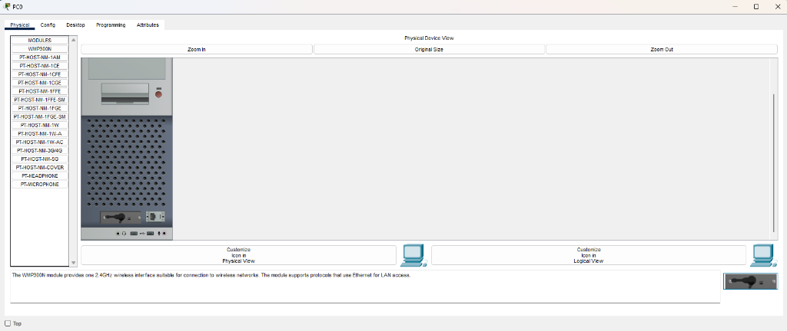
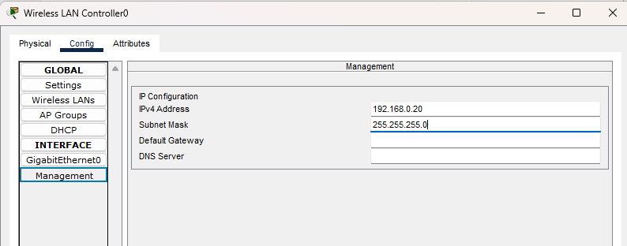
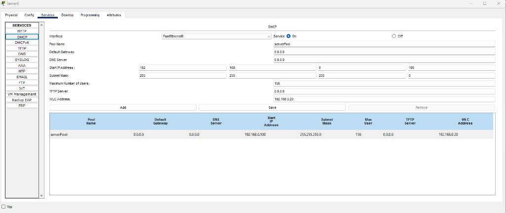
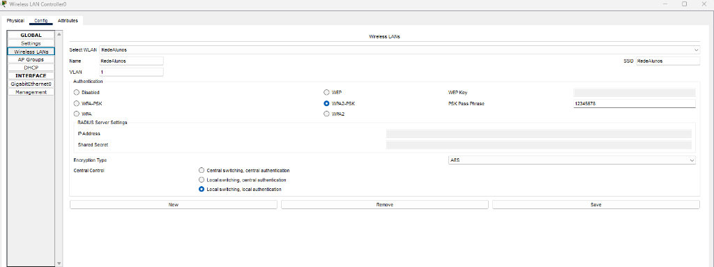
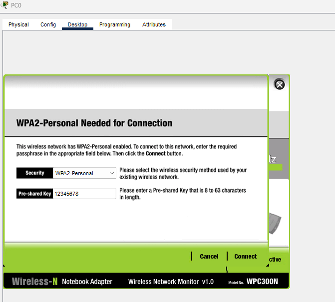
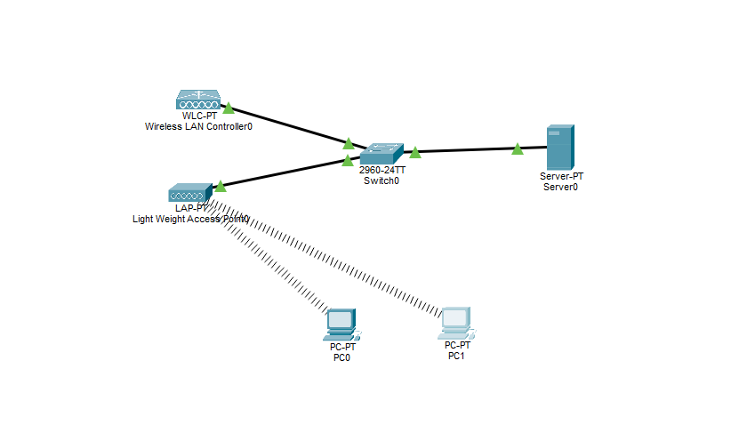

Roteiro prático passo a passo para configuração de pontos de acesso leves (Lightweight AP), gerência centralizada via Wireless Controller e concessão de DHCP.
Em ambientes domésticos, utilizamos Access Points autônomos que armazenam individualmente o nome da rede (SSID), a senha e os canais de frequência. Em redes empresariais (hospitais, universidades, aeroportos), com dezenas ou centenas de APs, essa abordagem torna-se impraticável.
Adota-se então a arquitetura Split-MAC (gerência centralizada), onde o processamento de controle é dividido entre dois componentes essenciais:
É o cérebro da rede sem fio. Concentra todas as configurações de SSIDs, parâmetros de criptografia (WPA2-PSK), VLANs e políticas de segurança. Permite alterar a senha de centenas de APs com um único clique.
É a antena transmissora. Um AP "leve" que não funciona sozinho. Ele descobre a WLC através de requisições na rede, registra-se nela e baixa as configurações de rádio automaticamente.
Distribui endereços IP para os clientes e informa ao LAP o endereço da controladora através do parâmetro WLC Address (Opção 43 do DHCP). Sem isso, o LAP não localiza a WLC.
Interconecta todos os elementos cabeados (Server0, WLC e LAP) na Camada 2 do Modelo OSI (VLAN 1 nativa), garantindo a comutação rápida dos quadros Ethernet.
| Dispositivo | Interface | Endereço IP | Máscara de Sub-rede | Método |
|---|---|---|---|---|
| Server0 (Servidor) | FastEthernet0 | 192.168.0.10 |
255.255.255.0 |
Estático |
| WLC-PT (Controladora) | Management | 192.168.0.20 |
255.255.255.0 |
Estático |
| LAP-PT (Access Point) | Gigabit/FastEthernet | 192.168.0.100 |
255.255.255.0 |
Dinâmico (DHCP) |
| PC0 (Cliente Wi-Fi) | Wireless0 (WMP300N) | 192.168.0.100 |
255.255.255.0 |
Dinâmico (DHCP) |
| PC1 (Cliente Wi-Fi) | Wireless0 (WMP300N) | 192.168.0.101 |
255.255.255.0 |
Dinâmico (DHCP) |
| Parâmetro da Rede Sem Fio | Valor Configurado | Finalidade |
|---|---|---|
| SSID (Nome da Rede) | RedeAlunos |
Nome visível para os dispositivos clientes |
| Autenticação & Criptografia | WPA2-PSK (AES) |
Padrão de segurança corporativo robusto |
| Chave Pré-compartilhada (Senha) | 12345678 |
Senha de conexão para os alunos |
| VLAN ID | 1 |
VLAN padrão de dados |
| WLC Address (no DHCP) | 192.168.0.20 |
Apontador para o LAP encontrar a controladora |
Abra um novo arquivo em branco no Packet Tracer e insira os equipamentos no espaço de trabalho sem conectá-los por cabos inicialmente:

2.1 Cabos: Usando o cabo Copper Straight-Through (cabo sólido preto), conecte ao Switch0:
Server0 (Fa0) → Switch0WLC-PT (Gig1) → Switch0LAP-PT (Fa0) → Switch02.2 Ligando o LAP: O LAP-PT vem desligado por padrão no Packet Tracer. Clique no LAP → aba Physical → arraste a fonte de alimentação preta do canto inferior direito para o conector redondo.

2.3 Placa Wi-Fi nos PCs (PC0 e PC1): Clique no PC → aba Physical → desligue no botão vermelho → remova a placa cabeada arrastando para a lista → insira o módulo WMP300N → religue o computador.

3.1 Servidor: Clique em Server0 → Config > FastEthernet0 → IP: 192.168.0.10 / Máscara: 255.255.255.0.
3.2 Controladora: Clique em WLC-PT → Config > Management → IP: 192.168.0.20 / Máscara: 255.255.255.0.

No Server0 → aba Services → clique em DHCP:
192.168.0.100 | Subnet Mask: 255.255.255.0.192.168.0.20 (campo vital para o registro do LAP).
Na WLC-PT → aba Config → Wireless LANs:
RedeAlunos | SSID: RedeAlunos1 | Authentication: WPA2-PSK12345678 → Clique em Save.
Acelere o tempo no Packet Tracer clicando 2 a 3 vezes no botão Fast Forward Time (>>) na barra inferior.
No PC0 → Desktop > PC Wireless → aba Connect → Refresh → selecione RedeAlunos → clique em Connect → digite 12345678 → confirme.

Repita o mesmo procedimento no PC1.
7.1 Confirmar IP: No PC0, acesse Desktop > IP Configuration e confirme que recebeu 192.168.0.100 via DHCP.
7.2 Teste de Ping: No PC0, acesse Desktop > Command Prompt e execute:
ping 192.168.0.101
O retorno de Reply from 192.168.0.101: bytes=32 time=... confirma que a rede está 100% operacional!

Marque à caneta cada item após validar a configuração na sua bancada do Packet Tracer:
| 1. Alimentação do LAP: Fonte de energia preta conectada na aba Physical do LAP-PT? |
| 2. Placas Wi-Fi: Módulos WMP300N inseridos no PC0 e PC1 (e computadores religados)? |
| 3. Cabeamento: Cabos de par trançado interligando Server0, WLC-PT e LAP-PT ao Switch? |
4. IP do Servidor: Configurado com IP estático 192.168.0.10 e máscara 255.255.255.0? |
5. IP da WLC: Interface Management configurada estaticamente em 192.168.0.20? |
| 6. Serviço DHCP: Marcado como On e com o campo WLC Address = 192.168.0.20 salvo? |
7. Criação da WLAN: SSID RedeAlunos com segurança WPA2-PSK e senha 12345678 salva? |
| 8. Sincronização: Botão Fast Forward Time acionado até o LAP emitir o sinal Wi-Fi? |
| 9. Conexão Wi-Fi: PC0 e PC1 associados com adaptador em status Active? |
10. Ping Bem-sucedido: Disparado ping 192.168.0.101 a partir do PC0 com 100% de resposta? |
O AP autônomo processa todas as funções de rádio e políticas localmente. O LAP depende 100% de uma controladora (WLC) para obter suas diretrizes de segurança, VLANs e SSIDs.
O LAP receberá um IP comum na rede, mas não saberá onde a WLC está. Consequentemente, não baixará a WLAN e não transmitirá nenhum sinal de Wi-Fi para os clientes.
O endereço 169.254.x.x é gerado pelo mecanismo APIPA do sistema quando o cliente solicita um endereço via DHCP e não obtém resposta do servidor dentro do tempo limite.